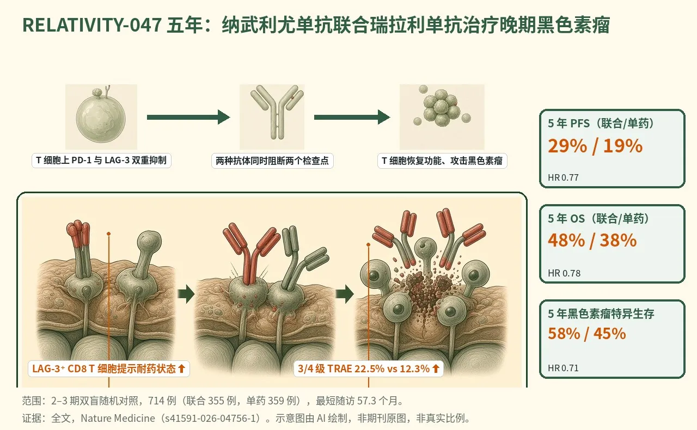

瑞拉利单抗联合纳武利尤单抗5年随访：总生存48%对38%
RELATIVITY-047 预设 5 年分析（最短随访 57.3 个月）显示，在既往未治疗的不可切除或转移性黑色素瘤中，纳武利尤单抗联合抗 LAG-3 抗体瑞拉利单抗较纳武利尤单抗单药持续获益：5 年 PFS 29% 对 19%（HR 0.77），5 年 OS 48% 对 38%（HR 0.78），5 年黑色素瘤特异生存 58% 对 45%（HR 0.71）；探索性分析提示 LAG-3⁺ CD8 T 细胞标记了一种可被瑞拉利单抗部分克服的 PD-1 阻断耐药状态。

- 纳武利尤单抗阻断 PD-1，瑞拉利单抗阻断 LAG-3，双通路解除 T 细胞抑制
- 5 年时 PFS、OS、MSS 的组间绝对差均扩大到约 10 个百分点或以上
- PD-L1≥1% 亚组：PFS 曲线几乎重合，OS 获益在约 3 年后才显现并主要体现在进展后生存
- 高 LAG-3⁺ CD8 T 细胞与单药较差结局相关，加用瑞拉利单抗后该关联消失、原发耐药比例下降
示意图概括了 PD-1 与 LAG-3 双检查点阻断的作用方式、RELATIVITY-047 在 5 年时的生存曲线分离，以及作者提出的“LAG-3⁺ 标记 PD-1 阻断耐药状态、瑞拉利单抗可部分逆转”的生物学模型。
研究背景与待解问题
免疫检查点抑制剂已是晚期黑色素瘤的标准治疗。作为参照系，纳武利尤单抗联合伊匹木单抗（CheckMate 067）在 10 年时相对纳武利尤单抗单药的 OS 与 MSS 绝对差分别为 6% 与 8%，但其 3/4 级 TRAE 发生率高达 59%–63%，这正是临床上一直在寻找“疗效持久、毒性更低”的联合方案的原因。LAG-3 是一种不同于 PD-1 的抑制性检查点，二者共表达于肿瘤浸润淋巴细胞并共同参与 T 细胞功能障碍；瑞拉利单抗是首个抗 LAG-3 抑制剂，与纳武利尤单抗组成的固定剂量复方被作者称为首个显示优于纳武利尤单抗单药的双检查点组合，并基于 RELATIVITY-047 的 PFS 结果（HR 0.75，95% CI 0.62–0.92）获批。
悬而未决的问题有两个。第一，这一获益在更长随访下是否持续、OS 曲线是否形成平台；4 年时 PFS、OS、MSS 的绝对改善分别为 10.6%、13.8% 与 13.7%。第二，也是更具机制意义的：肿瘤 PD-L1≥1% 的患者 OS 获益明显延迟（3 年随访才出现、4 年仍维持），而 PD-L1<1% 患者早期即获益——为什么同一方案在两个亚组呈现截然不同的获益时间轴？本文试图用 5 年数据和外周血、肿瘤组织及转录组生物标志物回答这一问题。
研究设计
入组标准为既往未接受系统治疗、组织学确诊的不可切除 III 期或 IV 期黑色素瘤，ECOG 体能状态 0 或 1，且肿瘤组织可评估 LAG-3 与 PD-L1；活动性脑转移、葡萄膜黑色素瘤与活动性自身免疫病被排除。患者按 1:1 随机接受纳武利尤单抗 480 mg + 瑞拉利单抗 160 mg 固定剂量复方或纳武利尤单抗 480 mg，均每 4 周一次，直至进展、不可耐受毒性或撤回同意。随机按 LAG-3、PD-L1、BRAF V600 状态及转移分期分层。肿瘤评估由盲态独立中心审查（BICR）按 RECIST v1.1 在第 12 周、此后至 52 周每 8 周、再之后每 12 周进行。
生物标志物部分采用多层次设计：基线肿瘤以 IHC 评估 LAG-3（免疫细胞占全部有核细胞百分比）与肿瘤细胞 PD-L1（28-8 pharmDx），并以 LAG-3/CD8/PD-L1 三重 IHC 加 HALO 图像分析定量 LAG-3⁺ CD8 T 细胞（按三分位分层）；外周血在基线（C1D1）与治疗 4 周（C2D1）用 25 色流式面板检测 PD-1⁺ 与 LAG-3⁺ CD8 亚群（按 PD-L1 亚组内中位数二分）；基线肿瘤 RNA 测序计算 60 个免疫、肿瘤微环境与非免疫致癌通路特征，经无监督聚类区分“热/冷”肿瘤，并按 SITC 2020 共识将患者划为原发耐药、获得性耐药与持久应答。此外，作者对 PD-L1 亚组做了事后多状态模型，把随访时间拆分为无进展、进展后与死亡三个状态，用来解释 OS 与 PFS 的“脱钩”。
核心结果
5 年生存：三条曲线均持续分离
中位 PFS 为 10.2 个月对 4.6 个月（HR 0.77，95% CI 0.65–0.92），5 年 PFS 29% 对 19%。中位 OS 54.8 个月对 33.2 个月（HR 0.78，95% CI 0.64–0.95），5 年 OS 48% 对 38%。事后分析的 MSS 中位未达到对 46.9 个月（HR 0.71，95% CI 0.57–0.88），5 年 MSS 58% 对 45%。确认 ORR 为 43.9% 对 33.7%，差值 10.1%；中位缓解持续时间联合组未达到、单药组 56.0 个月。作者强调，5 年时 OS 与 MSS 的组间绝对差是所有既往时间点中最大的，均扩大到至少 10%。从临床角度看，更值得关注的是曲线形态：与 CheckMate 067 相似，约 3 年起出现长平台——3 年时仍存活且无进展的患者（联合组 83 例、单药组 72 例）5 年 OS 分别为 94% 与 93%，MSS 为 99% 与 97%，提示一旦进入这个“平台人群”，后续事件很少，两臂差异主要在于有多少患者能进入平台。
亚组与缓解深度
在多数临床相关亚组中，PFS、OS、MSS 与 ORR 均倾向联合组；BRAF 突变患者的 PFS 与 MSS 改善达到显著，肿瘤 LAG-3 无论 <1% 或 ≥1% 均有显著 PFS 改善。按组织学看，皮肤非肢端型缓解最深：该亚组中靶病灶缩小 ≥80% 的比例联合组 42.1%、单药组 35.6%；肢端型与黏膜型例数较少，作者认为组间比较难以解读。两组均呈现缓解越深、长期生存越好的梯度。
PD-L1≥1%：OS 获益延迟且来自进展后
PD-L1≥1% 患者的 PFS 曲线仅在约 6 个月处有极小分离，但 OS 与 MSS 曲线约在随机后 3 年开始向联合组分开，5 年绝对差分别为 11% 与 12%；中位 OS 80.3 个月对 42.0 个月（HR 0.81，95% CI 0.59–1.11），中位 MSS 未达到对 69.3 个月（HR 0.75，95% CI 0.52–1.08），置信区间均跨越 1。多状态分析把这一“脱钩”拆开：PD-L1<1% 亚组中“无进展→进展”转移的 HR 为 0.60（95% CI 0.47–0.75），而 PD-L1≥1% 亚组为 0.95（95% CI 0.70–1.30），即两臂进展风险相当；但 PD-L1≥1% 患者“进展→死亡”的 HR 为 0.71（95% CI 0.49–1.04），7 年内进展后状态的限制平均时间为 1.54 年对 1.19 年。换言之，这一亚组的 OS 优势并不来自推迟首次进展，而来自进展后活得更久。二线使用纳武利尤单抗+伊匹木单抗或 BRAF/MEK 抑制剂的患者中，联合组来源患者的二线 PFS 与 OS 也更长（样本量小），作者据此认为一线加用瑞拉利单抗未见损害后线治疗疗效。
中枢神经系统进展与安全性
基线无中枢病灶者中，随访期间新发中枢病灶联合组 16 例（4.6%）、单药组 26 例（7.5%），中位出现时间 10.9 个月对 7.6 个月；在发生疾病进展者（190 例对 229 例）中，中枢进展比例为 8% 对 10%，中枢转移无病生存 HR 0.65（95% CI 0.34–1.24），属于数值趋势。安全性与既往报告一致：3/4 级 TRAE 22.5% 对 12.3%，因此停药 10.1% 对 4.2%，自首次 OS 分析以来无新增治疗相关死亡。描述性分析中，因 TRAE 停药或发生 3/4 级 TRAE 的患者长期生存率反而高于意向治疗人群，但作者提示这类分析受“不朽时间”偏倚影响，仅供描述。
生物标志物：LAG-3⁺ CD8 T 细胞标记 PD-1 阻断耐药
在 PD-L1≥1% 且有外周 CD8 数据的 231 例中，外周 PD-1⁺ CD8 T 细胞低于中位数者，联合组在所有时间点均占优；高于中位数者曲线早期交叉，约 30 个月后才倾向联合组。外周 LAG-3⁺ CD8 T 细胞高于中位数者 OS 曲线早期即向联合组分离，低于中位数者则约 48 个月后才分离；在单药组内，高外周 LAG-3⁺ CD8 与较差 OS 相关，而联合组内无此关联。肿瘤组织（161 例）呈现同向的连续谱：肿瘤 LAG-3⁺ CD8 低者（23 例，两臂各 12 与 11 例）曲线交叉无明确分离，中等者（47 例）约 30 个月后分离，高者（91 例）早期分离并持续。基线外周免疫细胞分析（556 例）中，PD-L1≥1% 单药组的高 LAG-3⁺ NK、CD4 与 CD8 细胞与较差 OS（趋势）、PFS 与 ORR 相关，这些关联在联合组与 PD-L1<1% 亚组均未出现。治疗中分析（457 例）显示，外周 LAG-3⁺ CD8 记忆 T 细胞在联合治疗 4 周时即升高，单药组未见；PD-L1≥1% 联合组中，这群细胞在存活超过 30 个月者中富集。转录组分群（366 例）显示，持久缓解富集于“热”肿瘤、“冷”肿瘤以原发耐药为主，但两类中都有例外；PD-L1⁺ 亚组中出现初始缓解（持久缓解与获得性耐药合计）的比例联合组 63%、单药组 50%，原发耐药由 50% 降至 38%；PD-L1⁻ 亚组原发耐药由 67% 降至 53%。
机制解读
论文所证实的： 在 5 年、意向治疗人群层面，PD-1 与 LAG-3 双阻断相较 PD-1 单阻断在 PFS、OS 与 MSS 上持续获益，且组间差距随时间扩大而非收窄；毒性高于单药但可管理，未出现新的安全性信号。在 PD-L1≥1% 亚组，事后多状态分析显示 OS 优势主要发生在进展之后，而不是体现为更少的首次进展。
作者假设： 作者提出一个“耐药状态”模型：LAG-3⁺ 免疫细胞的富集标记了一种 PD-1 阻断的临床相关耐药状态——在单药组，高 LAG-3⁺ CD8 与差结局相关；加入瑞拉利单抗后该关联消失、原发耐药比例下降，曲线早期即分离。外周 PD-1⁺ CD8 偏低时联合获益更早显现，作者解释为 PD-1/PD-L1 通路驱动的生物学越不占主导，LAG-3 阻断的贡献越容易被检出；而低 LAG-3⁺ 患者的延迟分离，则被解读为对纳武利尤单抗的耐药是随时间“获得”的。治疗中 LAG-3⁺ CD8 记忆 T 细胞升高并在长期存活者中富集，被作者用来提示记忆 T 细胞参与持久获益。需要强调，这些都是探索性、假设生成的关联，尚未证明因果；作者自己也指出，基于整体组织的基因表达方法粒度不足，“热”肿瘤中也有原发耐药者、“冷”肿瘤中也有持久应答者。
局限与不确定
- 5 年更新为描述性分析；MSS、多状态模型、二线治疗疗效与 3 年无进展人群分析均为事后分析，PD-L1≥1% 亚组的 OS 与 MSS HR 置信区间跨越 1。
- 生物标志物分析为探索性，未设计用于正式统计比较，未做多重比较校正；各分析可用样本量不一，部分亚组极小（如肿瘤 LAG-3⁺ CD8 低/PD-L1⁺ 亚组两臂仅 12 与 11 例），未必代表总体人群。
- 进展后数据收集有限，无法区分进展后生存获益的不同解释（如后线治疗差异）；转录组样本均为基线样本，只能反映“易感于复发”的预存状态，而非进展时的逃逸机制。
- 与 CheckMate 067 的毒性比较属跨试验比较，免疫相关毒性管理随时代改进，需谨慎解读。
- 本文为 Accelerated Article Preview，尚未完成编辑校对；研究由 Bristol Myers Squibb 资助，申办方员工参与设计、分析、写作与投稿决策，多位作者为申办方员工或与其有咨询关系。
临床/产业意义
对临床而言，这份 5 年数据把纳武利尤单抗+瑞拉利单抗从“PFS 获批”推进到“长期 OS 与 MSS 获益明确、曲线形成平台”的阶段：5 年 OS 48% 对 38%，3/4 级 TRAE 22.5%，为不适合或不愿承受纳武利尤单抗+伊匹木单抗高毒性的患者提供了一个有长期数据支撑的一线双检查点选项（但两种联合之间尚无头对头随机比较）。PD-L1≥1% 亚组的经验同样重要：若只看 PFS，几乎会得出“该亚组无获益”的结论，而 OS 优势在进展后才逐渐显现——这提醒我们，评价 LAG-3 等新检查点组合时，PFS 未必能完整捕捉长期生存获益。产业层面，外周血 LAG-3⁺ CD8 T 细胞作为一种无创、可量化的潜在分层标志物值得前瞻性验证；若能确认其预测价值，将有助于识别最可能从加用 LAG-3 阻断中早期获益的患者，也为其他 LAG-3 药物及新一代检查点组合的试验设计提供参照。